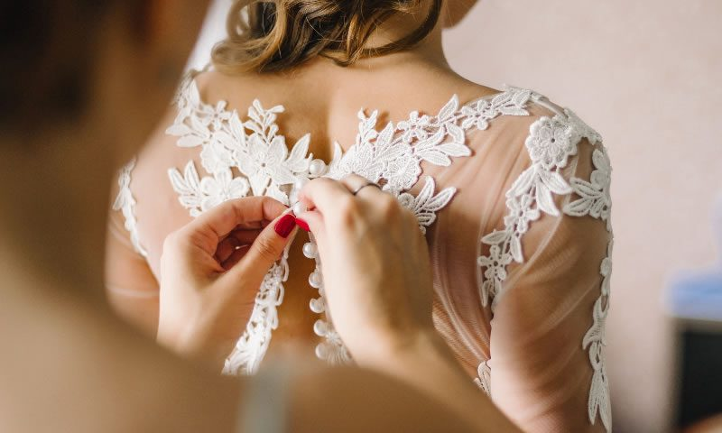
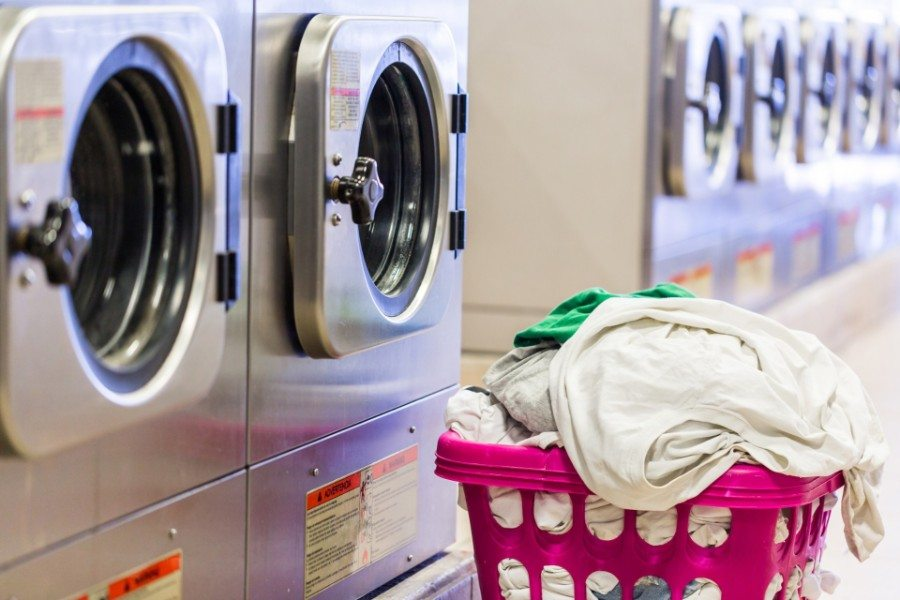

About us!
Su Alterations, in the Woodland Mall, is a family business that has ran for over 30 years. We provide quick and quality work on all kinds of garments. We’re open six days a week with expert tailors and seamstresses on staff and walk-in alteration services. We can provide a wide range of clothing alterations and tailoring options for your wardrobe.
Our Alteration and Tailoring Services
We do a variety of items and garments. Please bring any items to see if we’re able to alter or mend them.
- 
Bridal
With bridal experts at our location, we’ll ensure that your wedding dress is perfectly altered for your special day!

Formal
We’ve got you covered with alterations for prom and homecoming, graduation, or even an upcoming wedding. Walk in any time; appointments are not required for formal dress alterations!

Casual
Come in today to experience the difference tailoring your casual wear can make to your wardrobe.
-
Outerwear Alterations
We provide alterations for jackets, coats, leather, and suede clothing items as well. No matter the outerwear, our experts have it covered!
-
Curtains
We also do home interior projects like curtains!
- 
Dry Cleaning
Dry cleaning is off-site and will take about 3-5 days.